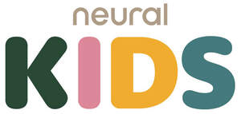

Trade Mark Journal No.2026/007 13 February 2026
UK00004330147 26 January 2026 (44,45)

- Class 44
- Medical and psychological services; temporary accommodation in clinics and functional complexes with private dwellings for the temporary accommodation of elderly, dependent, handicapped or mentally handicapped persons in nursing homes providing personal and health care and assistance services; Pharmacy advice; counseling related to the personal welfare of elderly, dependent, disabled or mentally challenged persons; home health care, i.e., health, nursing and medical care services; Convalescent homes; nursing homes; nursing facility; care of disabled or mentally challenged persons; Hygienic and beauty care for human beings and animals; geriatric care; psychological diagnosis, psychological counseling, psychological assessment, psychological evaluation and screening services; Physiotherapy; hospices, convalescent homes, medically assisted living facilities and services that may be provided in medically assisted or non-medically assisted living facilities and convalescent homes to the elderly, dependent, disabled or mentally handicapped persons, i.e., health and nursing services; home hospitalization; Psychotherapy services; physical and mental rehabilitation of patients; Aromatherapy services; Advisory services relating to the treatment of degenerative diseases; health advisory services; health and medical care services; nursing home services and hospital services; Medical clinic services; psychiatric clinic services; Palliative care; home nursing services; nursing and medical assistance services; hydrotherapy services; neuro-rehabilitation services; Services of a psychologist; physical rehabilitation services; Mental health services; Voice and speech therapy services; Medical services; Psychiatric services; Therapy services; provision of medical information and assistance in the field of geriatrics, mental health, physiotherapy, physical and mental rehabilitation and psychological treatment; Speech and hearing therapy; Occupational therapy.
- Class 45
- Babysitting; Providing personal support services for families of patients with life threatening disorders; Dating services; Providing patient advocate services to hospital patients and patients in long term care facilities; Online social networking services; Security services for the physical protection of tangible property and individuals; Legal services.
Neural Servicios de Salud SL
Representative: Jensen & Son